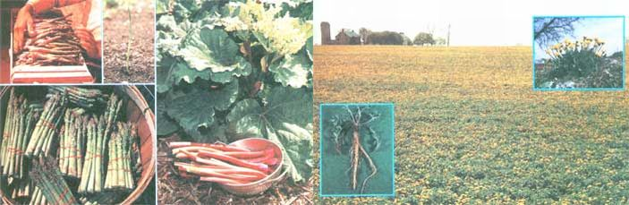

ABOVE LEFT: Bamboo shoots are delicious if picked (soon after they push up through the ground) and added to salads or sauteed in butter. If left to grow to medium or full size, however, ""cane"" can be used as fishing poles, rattan furniture, etc. ABOVE RIGHT: A bed of Egyptian onions and the ""baby"" bulbs that can be harvested year after year from the plant's tall stalks.